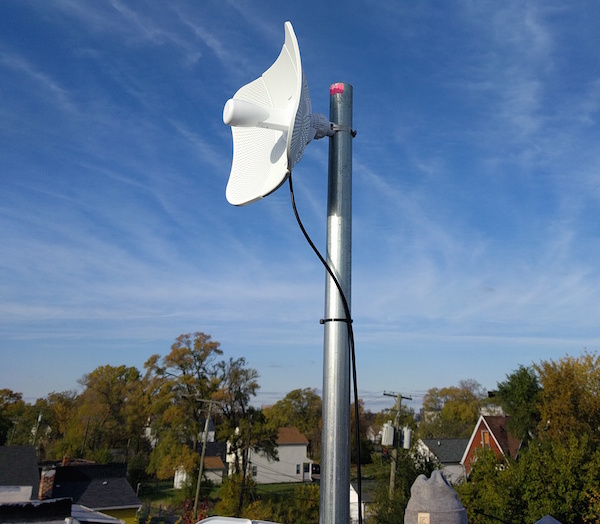
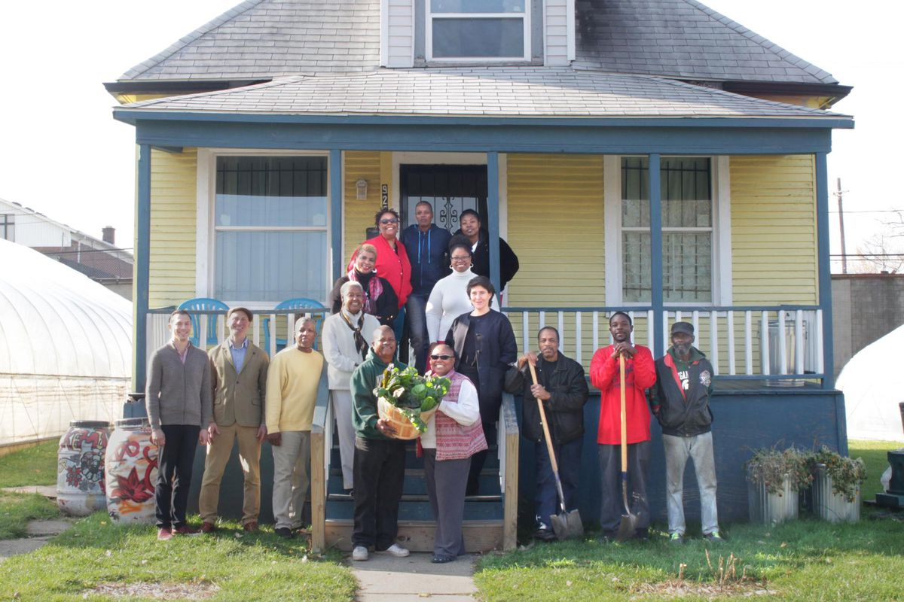
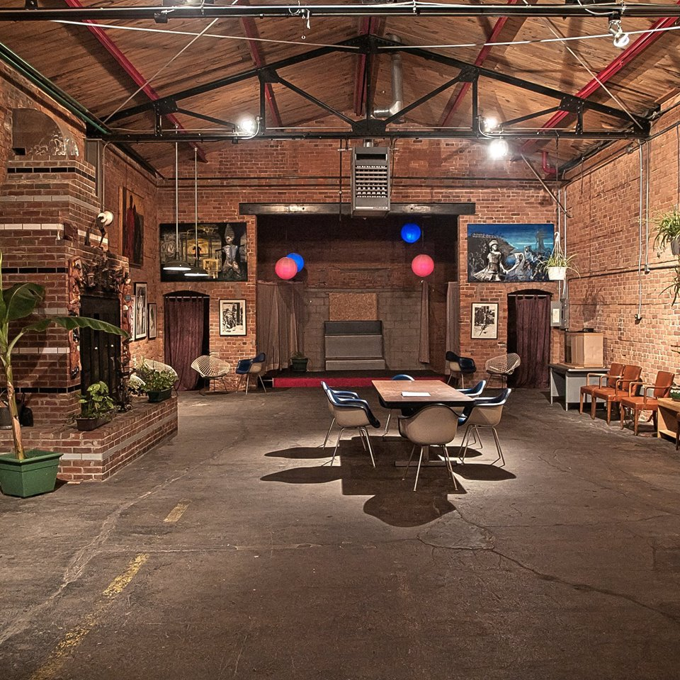
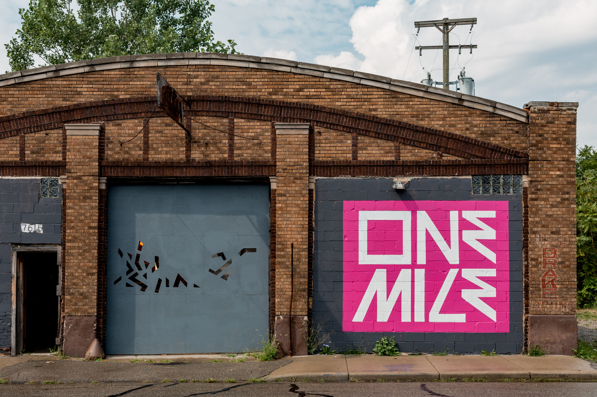

Neighborhood Page
We built this website especially for residents of the North End neighborhood of Detroit, Michigan. The zip codes that make up our neighborhood are 48202 and 48206. Below are some of the organizations working in the North End to make our neighborhood vibrant, safe, healthy, and powerful.
Community organizations in the North End
NEWCC Equitable Internet Initiative community wifi network
EII's website NEWCC EII is a project to bring Internet to 50 housesholds in the North End that wouldn't otherwise have Internet access. It is community operated by North End residents called digital stewards. It is based at the North End Woodward Community Coalition and extends throughout the neighborhood.
WNUC radio station

wnuc's website WNUC is a community radio station here. Many of their shows are locally produced, highlighting local issues and amplifying the voices of Detroiters working to improve their city. You can listen at 96.7 FM.
Storehouse of Hope

Storehouse of Hope's website Storehouse of Hope provides emergency food and other services for residents of the North End. They run a food pantry and are working to create the first Community Land Trust in Detroit.
Oakland Avenue Urban Farm
Oakland Avenue Urban Farm's website Oakland Avenue Urban Farm is a non-profit urban agricultural project dedicated to cultivating healthy foods, sustainable economies, and active cultural environments.
Detroit People's Platform
People's Platform website The Detroit People's Platform is a broad network of Detroit-based social justice organizations, activists, and residents committed to bringing about just transformation in economics and social dynamics through popular education, celebration, and organizing.
Safe House
The Safe House is the organizing center of a block patrol that keeps an eye on the neighborhood community. They also host a router for the NEWCC EII community wireless network.
4ward Phoenix
.jpg)
4ward Phoenix's website 4Ward Phoenix is a community based business developed to help prevent joblessness from reoccurring. They are building a mini-golf course on six vacant lots in the North End.
Red Door
Red Door's website Red Door is an art gallery, event space, and meeting space for residents and cultural organizations based in the North End. They also host a router for the NEWCC EII community wireless network.
O.N.E Mile
O.N.E Mile's website O.N.E. Mile Detroit is an arts and event space and a creative project to support cultural production and economic activity in the North End.